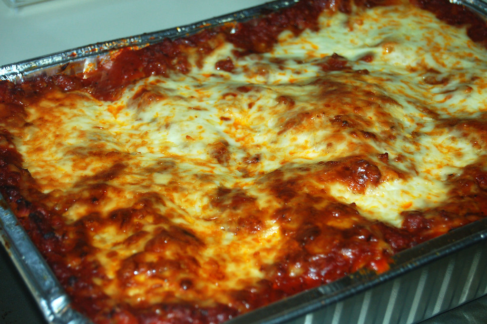

Craving a filling italian dish? Then try this simple lasagna recipe! With basic ingridients like meat sauce, cheese, and noodles, you too can have your own lasagna prepared in just 3 hours of prepping and cooking. With 8 sizable servings, this dish is a great option for family dinners, and can even be stored in refridgerator to be enjoyed over multiple days!